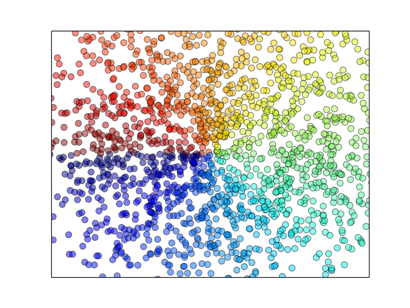
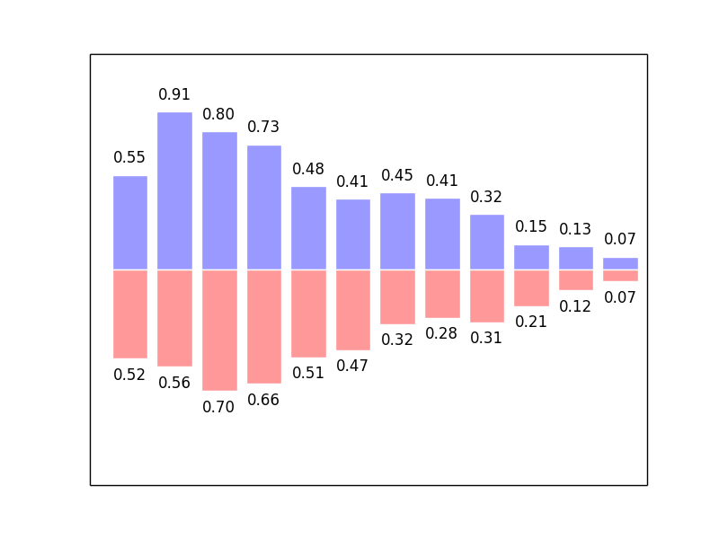

pltplayground
Table of Contents
1 figure 图像
figure为一个单独小窗口，小窗口内可绘制多个小图片。
import numpy as np import matplotlib.pyplot as plt x = np.linspace(-5, 5, 100) y1 = x**2 y2 = np.sin(x) * 10 + 10 plt.figure(num=0, figsize=(8, 8)) plt.plot(x, y1) plt.plot(x, y2, color='red', linestyle='--') plt.savefig('../img/playground/figure1.png') return './img/playground/figure1.png'
2 set label
2.1 label lim
import numpy as np import matplotlib.pyplot as plt x = np.linspace(-5, 5, 100) y1 = np.cos(x) * 10 + 10 y2 = np.sin(x) * 10 + 10 plt.figure() plt.plot(x, y1) plt.plot(x, y2, color='red', linewidth=1.0, linestyle='--') plt.xlim((-3, 3)) plt.ylim((0, 10)) plt.xlabel(('X mother fucker')) plt.ylabel(('Y mother fucker')) plt.savefig('../img/playground/figure2.png') return './img/playground/figure2.png'
2.2 label ticks
import matplotlib.pyplot as plt import numpy as np x = np.linspace(-3, 3, 50) y = 2*x new_ticks = np.linspace(-1, 2, 5) plt.xticks(new_ticks) plt.yticks([-2, -1, 0, 1, 2, 3], [r'$too\ bad$', r'$bad$', r'$eh$', r'$lame$', r'$ha$', r'$well$']) plt.plot(x, y) plt.savefig('../img/playground/figure3.png') return './img/playground/figure3.png'
2.3 set label name or pos
import numpy as np import matplotlib.pyplot as plt x = np.linspace(-3, 3, 50) y = x**2 y1 = np.sin(x) plt.figure() plt.plot(x, y) plt.plot(x, y1) plt.xlim((-2, 2)) plt.ylim((-1, 1)) new_ticks = np.linspace(-1, 2, 5) plt.xticks(new_ticks) plt.yticks([-2, -1.8, -1, 1.22, 3],['$really\ bad$', '$bad$', '$normal$', '$good$', '$really\ good$']) ax = plt.gca() ax.spines['right'].set_color('none') ax.spines['top'].set_color('none') plt.savefig('../img/playground/figure4.png') return './img/playground/figure4.png'
3 Legend
3.1 basis
Legend图例给出图中数据对应信息
import numpy as np import matplotlib.pyplot as plt x = np.linspace(-3, 3, 50) y1 = np.sin(x) y2 = np.cos(x) plt.figure() plt.xlim((-1, 1)) plt.ylim((-1, 1)) plt.plot(x, y1, label='sin line') plt.plot(x, y2, color='red', linestyle='--', label='cos line') # best0, upper right1, upper left2, lower left3, lower right4 # center left6, center right7, lower center8, upper center9, center10 plt.legend(loc='upper left') plt.savefig('../img/playground/figure5.png') return './img/playground/figure5.png'
4 Annotation
添加针对某点(处)的注释信息
import numpy as np import matplotlib.pyplot as plt x = np.linspace(-3, 3, 50) y = np.sin(x) y1 = np.cos(x) plt.figure(num=1, figsize=(8, 8)) plt.plot(x, y) ax = plt.gca() ax.spines['right'].set_color('none') ax.spines['top'].set_color('none') ax.xaxis.set_ticks_position('bottom') ax.spines['bottom'].set_position(('data', 0)) ax.yaxis.set_ticks_position('left') ax.spines['left'].set_position(('data', 0)) x0 = 1 y0 = np.sin(x0) y0 = y0.tolist() plt.plot([x0, x0, ], [0, y0, ], 'k--', linewidth=2.5) plt.scatter([x0, ], [y0, ], s=50, color='b') plt.annotate(r'$sin(1)=%s$' % y0, xy=(x0, y0), xycoords='data', xytext=(+30, -30), textcoords='offset points', fontsize=16, arrowprops=dict(arrowstyle='->', connectionstyle="arc3,rad=.2")) plt.text(-2, 1, r'$VAN PNG$', fontdict={'size': 20, 'color': 'b'}) plt.savefig('../img/playground/figure6.png') return './img/playground/figure6.png'
5 Scatter
import numpy as np import matplotlib.pyplot as plt n = 2048 x = np.random.normal(0, 1, n) y = np.random.normal(0, 1, n) t = np.arctan2(y, x) plt.scatter(x, y, s=75, c=t, alpha=.5) plt.xlim(-1.5, 1.5) plt.xticks(()) plt.ylim(-1.5, 1.5) plt.yticks(()) plt.savefig('../img/playground/figure7.png') return './img/playground/figure7.png'

6 Bar
import numpy as np import matplotlib.pyplot as plt n = 12 X = np.arange(n) y = (1 - X/ float(n)) * np.random.uniform(0.5, 1.0, n) y1 = (1- X/ float(n)) * np.random.uniform(0.5, 1.0, n) plt.bar(X, +y, facecolor='#9999ff', edgecolor='white') plt.bar(X, -y1, facecolor='#ff9999', edgecolor='white') plt.xlim(-.5, n) plt.xticks(()) plt.ylim(-1.25, 1.25) plt.yticks(()) for x, y in zip(X, y): plt.text(x + 0.4, y + 0.05, '%.2f' % y, ha='center', va='bottom') for x, y in zip(X, y1): plt.text(x + 0.4, -y - 0.05, '%.2f' % y, ha='center', va='top') plt.savefig('../img/playground/figure8.png') return './img/playground/figure8.png'

7 Contours
import numpy as np import matplotlib.pyplot as plt def f(x,y): # the height function return (1 - x / 2 + x**5 + y**3) * np.exp(-x**2 -y**2) n = 256 x = np.linspace(-3, 3, n) y = np.linspace(-3, 3, n) X,Y = np.meshgrid(x, y) # use plt.contourf to filling contours # X, Y and value for (X,Y) point plt.contourf(X, Y, f(X, Y), 8, alpha=.75, cmap=plt.cm.hot) # use plt.contour to add contour lines C = plt.contour(X, Y, f(X, Y), 8, colors='black', linewidth=.5) plt.clabel(C, inline=True, fontsize=10) plt.xticks(()) plt.yticks(()) plt.savefig('../img/playground/figure9.png') return './img/playground/figure9.png'